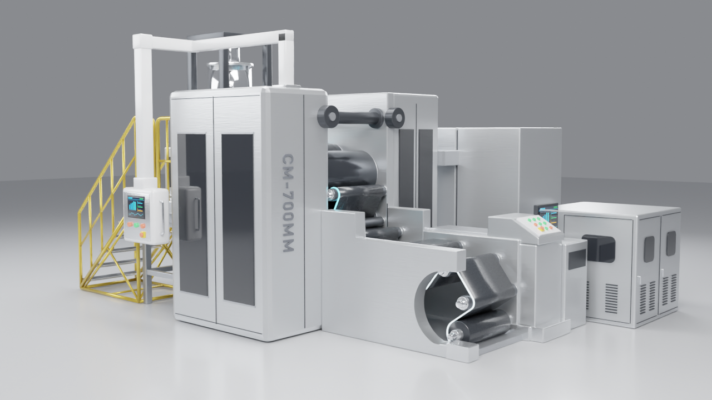

正在初始化 CM-700MM 展会 3D 引擎…
CM-700MM
多辊干法极片制膜装备
MULTI-ROLL DRY-ELECTRODE CALENDERING LINE
无人值守巡演 · ACT 01 / 05
25s 后自动恢复
纯净大屏
H
全屏展示
F
官网版
工程版
显示触控栏 (H)
ACT 01
旗舰外观巡航 · FLAGSHIP OVERVIEW
700 mm 宽幅干法极片制膜旗舰
省去 NMP 有毒溶剂与百米烘箱，以五辊精密压延重塑动力与固态电池极片制造
1
整机全景
2
开盖剖视
3
五辊微距
4
张力收卷
5
爆炸拆解
开盖
透视
爆炸
24 m/min
⏸ 巡演中
↺